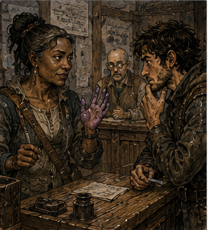
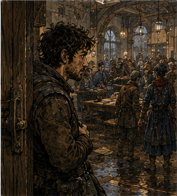

The guild had put my sacks behind a locked door.
This was reasonable.
I disliked it immediately.
The ink-thumbed clerk was at the front desk when I arrived. She looked up from a ledger, saw me, and looked toward the clock on the wall.
“You were here yesterday.”
“I know.”
“That was not an invitation.”
“I have a question.”
“No.”
“I haven’t asked it.”
“You have the face.”
“What face?”
“The one where you think something has become your business.”
I considered denying this.
“What happened to the South Canal sacks?”
She closed the ledger.
“That question.”
“Yes.”
“They were transferred.”
“To whom?”
“No.”
“Where?”
“No.”
“What were they?”
“If we knew that, I imagine the report would say.”
“Can I see the report?”
“No.”
I leaned on the counter.
She pointed at my arm.
I stopped leaning.
“Why?”
“Because you are not assigned to it.”
“I found them.”
“You found a warehouse wall and then became involved in a fight behind it.”
“That is an uncharitable summary.”
“It is a guild summary.”
“Those are often the same thing.”
She opened the ledger again.
I did not move.
After several seconds she sighed.
“You were paid.”
“Yes.”
“The watch took custody.”
“Yes.”
“The owner is being questioned.”
“Merek Verran.”
“Yes.”
“The sacks?”
“Greg.”
“I am asking because if they are dangerous, somebody should know before opening them.”
“They have not been opened.”
That was something.
“Why not?”
Her eyes narrowed.
I had done it again.
One useful answer, immediately converted into three more questions.
I smiled apologetically.
It did not help.
“Because the warder told us not to,” she said.
“What warder?”
A voice behind me said, “Me.”
I turned.
The woman standing there was perhaps forty, perhaps older, with gray threaded through black hair at both temples and the compact shoulders of someone who had spent years carrying things other people assumed magic made weightless. She wore a dark blue guild coat with a stitched silver square at the collar. A leather case hung from one shoulder.
Her left hand was stained purple from the first knuckle down.

Not ink.
Reagent.
I looked at the hand.
She noticed.
“Problem?”
“No.”
“You stared.”
“I was identifying the stain.”
“Were you?”
“Trying.”
“What is it?”
I looked again.
Purple at the skin folds. Darker around the nail beds. No blistering. Faint metallic smell, unless that was the case.
I knew six purple reagents.
I thought I knew eleven.
Three of them would have removed the skin.
“Something used for ward tracing,” I said.
The woman looked at the clerk.
“He always like this?”
“Worse when encouraged.”
“I’m Greg.”
“I know.”
That was becoming less flattering.
She shifted the leather case higher on her shoulder.
“Edrin Saye. Guild warder.”
I waited for recognition.
Nothing.
No future title.
No tavern song.
No ruined city.
Just Edrin Saye.
That was pleasant.
“What did you find on the sacks?” I asked.
“A reason not to let adventurers poke them.”
“I wasn’t going to poke them.”
The clerk coughed.
I ignored her.
Edrin said, “There’s a seal.”
“What kind?”
“A seal.”
“That is a category.”
“So is warder.”
I liked her slightly less.
Which was promising.
“Can I see it?”
“No.”
“Why?”
“Because you’re not assigned to it.”
I looked at the clerk.
She looked delighted.
“This place has a culture problem.”
Edrin walked toward the side hall.
I followed.
The clerk said, “Greg.”
“I’m only walking.”
“Somewhere else.”
Edrin stopped at the hall entrance and looked back at me.
“What did you see at the warehouse?”
That was permission.
Probably.
I joined her.
The clerk muttered something about Bronze adventurers and administrative decay.
I told Edrin what I had actually seen. Three dark sacks among ordinary grain stock. Heavier than they looked when one thief dragged one. No obvious dust. No smell I remembered. The thieves had targeted them specifically. Merek Verran had lied about the nature of the thefts, or at least omitted enough that the distinction was becoming philosophical.
Edrin listened without interrupting.
“What did you touch?” she asked.
“The warehouse.”
“The sacks.”
“No.”
“The men?”
“Yes.”
“With magic?”
“One of them indirectly.”
She waited.
I explained the hook.
Her expression did not change.
“Show me.”
“With a hook?”
“With your hand.”
I held my fingers apart to show the size of the Barrier.
She looked at the space between them.
“That small?”
“Yes.”
“Why?”
“Because my head is also small.”
She stared at me.
“Relative to a warehouse door.”
“Ah.”
She resumed walking.
“Good instinct.”
That pleased me enough that I distrusted it.
The side hall ended at another desk, this one occupied by a young man copying numbers from one page to another. Edrin signed something. He unlocked a heavy door and stepped through.
I followed.
She turned.
“No.”
“You said show you.”
“I said show me the Barrier.”
“Oh.”
“Outside.”
“Right.”
I backed out.
The door closed.
I waited.
The young man copied numbers.
I read them upside down until he put his hand over the page.
“That’s rude,” I said.
“So is reading.”
“I wasn’t reading. I was noticing.”
He moved the page farther away.
Edrin returned carrying a square of rough wood about the size of my palm.
She shut and locked the door behind her.
The wood had a black line painted across it.
No.
Not painted.
Burned.
Maybe.
“Training tile?” I asked.
“Testing tile.”
“What does it test?”
“Whether you can follow instructions.”
“I’m beginning to understand why the guild employs you.”
She held it out.
“Barrier between your hand and the tile. Do not touch the tile. Do not cast through it. Do not try anything clever.”
“That last one is vague.”
“It is intentionally broad.”
Hessa had infected the city.
I raised my hand.
“Fixed?”
“Yes.”
“How long?”
“Until I tell you.”
I gathered mana.
The morning’s beans had left my channels tired in a way that was easy to mistake for readiness. They felt warm. Open.
That was not the same thing as strong.
I formed a small Barrier between my palm and the tile.
It came more easily than I expected.
Too easily.
I almost changed it.
Shorter duration. Less feed. See if the same shape could exist without the full anchor.
Do not experiment, Hessa had said.
I held the ordinary form.
Edrin moved the tile forward until it touched the Barrier.
Pressure arrived.
Not much.
My channels noticed anyway.
“Hold,” she said.
I held.
The tile pressed harder.
The Barrier trembled.
My first instinct was to reinforce.
My second was to change the angle and let the tile slide.
My third was to shorten the structure and pulse it against the movement.
All three were old answers.
Or future answers.
Or answers I had invented this morning because a bean had moved two fingers and I was an idiot.
I held.
“Release.”
I released.
The spell vanished.
Edrin looked at me.
“You wanted to move it.”
“Yes.”
“Why didn’t you?”
“You told me not to.”
“That usually work?”
“Recently.”
She handed the tile to the young man.
“Your Barrier is weak.”
“I know.”
“Very weak.”
“I know.”
“Your placement is better than your output.”
“I know.”
“You’re irritating.”
“I’ve heard that.”
“Your release is strange.”
I stopped.
“What about it?”
“You cut it clean.”
I waited.
She waited.
I hated when competent people learned my tricks.
“What does that mean here?” I asked.
“Here?”
“In current guild instruction.”
Her eyes narrowed.
Careful.
“What do they call it?”
“Release.”
“That’s all?”
“What do you want us to call it?”
I almost said termination architecture.
I was not certain that was the right century.
Or the right school.
Or a real term.
I had once argued for three hours about whether a Barrier ended when mana feed stopped or when the boundary ceased behaving as a boundary.
I remembered the argument.
I did not remember which side I had been on.
That seemed unfair.
“Nothing,” I said.
Edrin studied me for another second.
Then she said, “Most beginners let a spell die.”
“I didn’t.”
“No. You ended it.”
A small thrill ran through me.
Not because I had impressed her.
Well.
Partly because I had impressed her.
Mostly because the distinction survived.
Something old in my hands still existed even when the power did not.
“What happens if they end it badly?” I asked.
“Usually nothing.”
“Usually.”
“Waste. Residual tension. Sometimes a rebound if the structure is under load.”
“What kind of rebound?”
She smiled for the first time.
“No.”
“What?”
“That face.”
I looked toward the front desk.
The ink-thumbed clerk was too far away to have warned her.
“This is discrimination.”
“This is experience.”
Edrin picked up the tile.
“The seal on your sacks is under load.”
Everything else disappeared.
“What kind?”
“I said no.”
“You just told me.”
“I told you enough to explain why we have not opened them.”
A seal under load.
I knew what that could mean.
I knew too many things it could mean.
Containment.
Compression.
Preservation.
Transfer.
A condition held in place.
A boundary carrying something that wanted to become something else.
Or current warders used under load differently than I did.
Know.
Think.
Check.
“What does it do?” I asked.
“We don’t know.”
Good.
That was the correct answer.
I hated it.
“What do you know?”
Edrin considered me.
“The sack itself is ordinary cloth. The closure is not. There’s a narrow structure around the cord and mouth. Old enough to be dirty, not old enough for me to call it ancient. It responds when the knot is disturbed.”
“How?”
“Pressure changes.”
“Mana?”
“Yes.”
“Direction?”
“No.”
“Heat?”
“No.”
“Sound?”
“No.”
“Did you test movement?”
“Yes.”
“How much?”
“Enough.”
“What does that mean?”
“It means I am the warder.”
I shut my mouth.
That took effort.
Edrin continued.
“The seal is stable while the sack remains closed. I can trace part of the boundary. I cannot identify the full condition. I do not know whether opening it releases something, destroys something, marks something, or merely tells somebody the sack was opened.”
“Could be preservation.”
“Yes.”
“Could be theft protection.”
“Yes.”
“Could be a trigger.”
“Yes.”
“Could be badly made.”
“Yes.”
I frowned.
“You considered that?”
“Of course.”
That should not have surprised me. It did. Annoying.
“Have you seen the structure before?” I asked.
“No.”
“Any family resemblance?”
“Some.”
“To what?”
“No.”
I breathed out.
“You enjoy this.”
“I enjoy you not knowing.”
“That is unprofessional.”
“It is one of the profession’s smaller pleasures.”
The side door opened.
The ink-thumbed clerk leaned through.
“Vale is here.”
I turned.
Of course he was.
Antonius stood in the front hall wearing a dark coat and the expression of a man who had arrived to collect money and discovered me instead.
His eyes moved from me to Edrin.
Then to the testing tile.
Then back to me.
“No,” he said.
“I haven’t asked anything.”
“That has never protected me.”
Edrin asked, “You know him?”
Antonius looked at her.
“He owes me money.”
“That explains a great deal.”
“It explains nothing,” I said.
Antonius ignored me.
“What are you doing here?” Antonius asked.
“I found something,” I said.
“You always find something.”
“That sounds complimentary.”
“It is not.”
The clerk returned to her desk.
“Vale, your appointment is with Master Crenn.”
“I know.”
“Then why are you talking to Greg?”
Antonius looked at me.
“I ask myself that regularly.”
He started toward the stairs.
I followed.
He stopped.
“No.”
This was becoming repetitive.
“I only need one thing.”
“You need many things. That is the problem.”
“The South Canal sacks.”
Antonius’s face did not move.
That was movement.
“You know about them,” I said.
“I know there was an incident.”
“You know more than that.”
“Why?”
“You didn’t ask what sacks.”
Edrin made a small sound behind me.
I could not tell whether it was approval or regret.
Antonius looked at me for several seconds.
Then he said, “Walk.”
We left the guild.
That was not what I had expected.
Outside, he turned toward the market without asking whether I was coming.
I came.
“What did you find?” he asked.
I told him about the seal.
Not every detail.
Enough.
Antonius listened.
“Did you touch it?”
“No.”
“Good.”
“Everyone keeps sounding surprised.”
“Experience.”
“Hessa said something similar.”
“Who is Hessa?”
“No one.”
Antonius glanced sideways.
I had done that badly.
He did not pursue it.
That was worse.
“What do you know about Merek Verran?” I asked.
“He rents two canal warehouses. Owns neither. Grain, lamp meal, dried beans in winter, sometimes wool.”
“Sometimes dark sealed sacks.”

“I had not heard that part.”
“Debts?”
“Everyone has debts.”
“To you?”
“No.”
“Competitors?”
“Yes.”
“Enemies?”
“Probably.”
“That is not useful.”
“It is more useful than inventing one.”
I looked at him.
He had become irritatingly quotable.
“Why are you here?”
“Appointment,” Antonius said.
“At the guild?” I asked.
“Yes.”
“For?” I asked.
“No.”
I sighed.
We crossed between two vegetable carts.
Antonius said, “The watch asked three lenders whether Verran had recently sought unusual credit.”
“Did he?”
“Not from me.”
“Why ask lenders?”
“Because merchants lie to guards differently than they lie to creditors.”
“That is beautiful.”
“No, it is ordinary.”
“Those are not mutually exclusive.”
He ignored that.
“Verran has been paying his storage rent on time. His grain volume is down. His cart traffic is not.”
I looked at him.
“That’s interesting.”
“Yes.”
“Why do you know his cart traffic?”
“I have a warehouse on the same canal.”
Of course he did.
“How far?”
“Far enough that you are not going there.”
“I didn’t ask.”
“You were about to.”
I had been.
We reached a tea stall.
Antonius bought tea.
One cup.
I looked at it.
He drank.
“You could have bought two.”
“You owe me money.”
“This feels vindictive.”
“It costs one copper.”
“Exactly.”
He took another drink.
I hated him.
“What do you think is in the sacks?” I asked.
“I don’t know.”
“Guess.”
“No.”
“Why?”
“Because you will turn my guess into a plan.”
“That is insulting.”
“It is preventative.”
I looked back toward the guild.
Seal under load.
Unknown condition.
Ordinary cloth.
Targeted theft.
Reduced grain volume. Stable cart traffic.
My mind assembled six possibilities.
Seven.
Nine.
I discarded three.
Rebuilt two.
Antonius watched me.
“Stop.”
“I’m not doing anything.”
“You are borrowing against information you do not have.”
That landed.
I disliked when he used my own problems in new contexts.
“I could learn more.”
“Yes.”
“How?”
“By waiting.”
“Terrible method.”
“Frequently profitable.”
I thought of Alden in the warehouse.
Wait one move.
The correction had worked because Alden's instinct was to spend advantage immediately.
Mine was apparently to spend uncertainty.
That was rude.
I drank imaginary tea.
Antonius finished the real one.
“What happens now?” I asked.
“The guild warder examines the seal. The watch questions Verran. Somebody checks manifests. Somebody checks carts. Somebody checks whether the sacks came through a gate legally.”
“And me?”
“You do whatever Bronze adventurers do when not interfering with investigations.”
“Get hit?”
“Preferably somewhere else.”
He started walking again.
“Tomorrow I’m training.”
“With Jorren?”
“And Alden.”
Antonius stopped.
Not dramatically.
One step simply failed to become the next.
“Marr?”
There it was again.
Not bells.
Not music.
A name entering a room before the person did.
“You know him?”
Antonius resumed walking.
“No.”
“That was a bad no.”
“It was an accurate no.”
“You reacted.”
“I recognized the surname.”
My attention sharpened.
“Hessa did too.”
Antonius looked at me.
“Hessa.”
“No one.”
“You are poor at that.”
“I am improving.”
“Who is Hessa?”
“My magic instructor.”
“You have a magic instructor.”
“Yes.”
“Since when?”
“Before you knew me.”
“That is reassuring.”
“It should be.”
“It is not.”
I waited.
He said nothing about Marr.
I let three steps pass.
Four.
This was restraint.
It felt awful.
“What does Marr mean to you?” I asked.
Antonius sighed.
“A family name.”
“I had gathered.”
“An old one.”
“How old?”
“Older than either of us.”
“Useful.”
“You asked.”
“Rich?”
“Some.”
“Noble?”
“Some.”
“Guild?”
“Some.”
“That is three different answers.”
“It is a large family.”
Ah.
That changed the shape of the problem.
Not solved.
Changed.
“Hessa said many people share names.”
“She was right.”
“Do you know Hessa Marr?”
“No.”
“Alden?”
“No.”
“Any Marr?”
“Yes.”
“Which?”
“No.”
I considered pressing. Antonius looked at me. I did not.
At the next corner Antonius turned toward the river.
I stopped.
He looked back.
“Aren’t you coming?”
“You told me to do something else.”
“I did.”
“I am.”
Suspicion entered his face.
“What?”
“I have training.”
“That is tomorrow.”
“My training.”
“With Jorren?”
“Yes.”
“Today?”
“Yes.”
“Did you forget?”
“No.”
I had.
Not entirely.
I had remembered it as a thing in the category of today, which was not the same as remembering the hour.
Antonius saw this.
His mouth moved.
“Do not.”
“I said nothing.”
“You were about to enjoy that.”
“I was.”
He walked away.
I headed toward Jorren.
Halfway there, I passed a mason repairing the corner of a courtyard wall.
He had set a plank across two low stacks of brick. On the plank sat a bucket of mortar. Each time he needed mortar, he stepped onto the plank, took what he needed, stepped down, and returned to the wall.
The plank bent under his weight.
Not much.
Enough.
I stopped.
The mason looked at me.
“What?”
“Nothing.”
I looked at the plank.
A Barrier was not a plank. It could take load, but brief load and continuous load were not the same problem. The hook had touched mine for less than a breath. The bean for less. Edrin’s tile had stayed against the fixed plane long enough for my channels to complain. I thought I knew why. I needed to test it. Not now.
I kept walking.
Three steps later I turned back.
The mason had returned to work.
I looked at the plank again.
“What if you didn't hold the weight?” I murmured.
The mason straightened.
“What?”
“Nothing.”
“You said something.”
“I was talking to the wall.”
He stared at me.
“That normal for adventurers?”
“No.”
I continued toward Jorren.
I was late.
He would hit me.
That was useful.
Probably.
Behind my eyes, a bean moved one finger.
A hook moved one inch.
A testing tile pressed against a wall that wanted to become something else.
And somewhere behind a guild door, three sacks remained closed because nobody yet knew which part of the seal mattered.
For once, neither did I.
I smiled all the way to training.